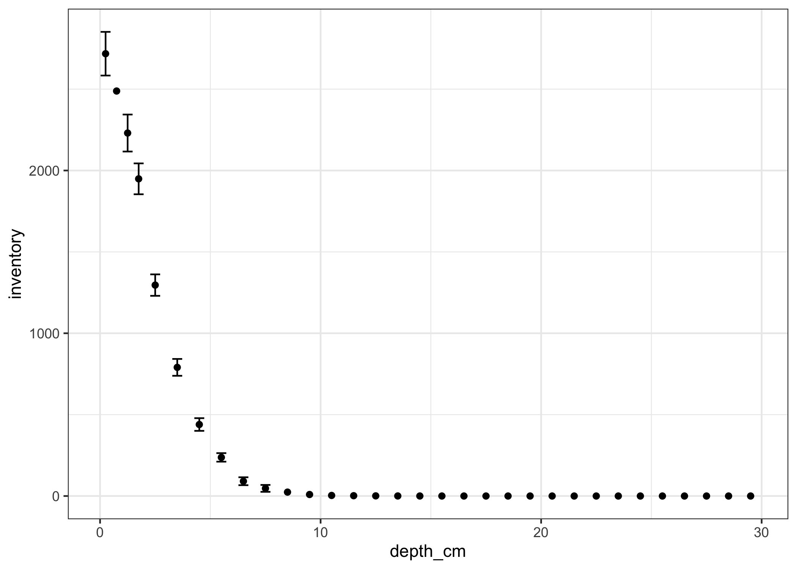

The goal of pb210 is to provide a reproducible R-based workflow to create sediment core chronologies from 210Pb activity measurements. I am not an expert on 210Pb, but occasionally need to interpret these data and would love input on how to make this package better (open an issue on the issues page or email me!).
This is currently in experimental mode and under heavy development, so use it with caution!
Installation
You can install the development version of pb210 from github with:
If you can load the package, it’s installed!
Example
You have some lead-210 measurements, but you want dates! Included are some lead-210 measurements from Alta Lake, Whistler, British Columbia, Canada.

First, you have to decide where “background” is. For these data, one might choose 7 cm (there is a facies change at 11 cm that is likely responsible for the further drop in activity). Then, you have to decide what background is. One method is to take the mean and standard deviation of the background data (another common method is to use measurements of 226Ra activity).
alta_lake_background <- alta_lake_pb210 %>%
filter(depth_cm > 8, depth_cm < 13) %>%
summarise(
background = mean(total_pb210_Bq_kg, na.rm = TRUE),
background_sd = sd(total_pb210_Bq_kg, na.rm = TRUE)
)
alta_lake_background
#> # A tibble: 1 x 2
#> background background_sd
#> <dbl> <dbl>
#> 1 38.0 4.00Next, we need to remove the “background” from the total measurements, propogating error on the way through. The pb210 package uses the errors package to do most of the error propogation. This measure is called the excess or unsupported specific activity. The pb210_excess() function is one way to do this.
alta_lake_pb210$excess_pb210 <- pb210_excess(
set_errors(alta_lake_pb210$total_pb210_Bq_kg, alta_lake_pb210$total_pb210_sd),
set_errors(alta_lake_background$background, alta_lake_background$background_sd)
)
For the constant rate of supply model (CRS; the most widely used model), we also need to calculate the inventory, or the cumulative activity of lead-210 starting at the bottom of the core. There are as many ways to do this as there are paleolimnologists, but the pb210_inventory() function should get you started. Note that this function requires the cumulative dry mass in kilograms as an input (as do the other dating functions).
alta_lake_pb210$cumulative_dry_mass <- pb210_cumulative_mass(
alta_lake_pb210$slice_mass_g / 1000 / pb210_core_area(diameter = 0.063)
)
alta_lake_pb210$inventory <- pb210_inventory(
alta_lake_pb210$cumulative_dry_mass,
alta_lake_pb210$excess_pb210,
model_bottom = 0
)
Here I told it to ignore the possibility that there was any excess lead-210 inventory in the core before the last known measurement…in reality, this should be considered (you can consider it yourself by creating an exponential model with pb210_fit_exponential() and passing it to model_bottom).
Now that we have all the parts, we can calculate the ages!
crs_ages <- pb210_crs(
alta_lake_pb210$cumulative_dry_mass,
alta_lake_pb210$excess_pb210,
inventory = alta_lake_pb210$inventory
) %>%
predict()
alta_lake_pb210 %>%
bind_cols(crs_ages) %>%
select(cumulative_dry_mass, age, age_sd)
#> # A tibble: 32 x 3
#> cumulative_dry_mass age age_sd
#> <dbl> <dbl> <dbl>
#> 1 0.422 7.11e-15 1.58
#> 2 1.10 2.88e+ 0 NA
#> 3 1.86 6.45e+ 0 1.63
#> 4 2.61 1.09e+ 1 1.56
#> 5 4.44 2.43e+ 1 1.65
#> 6 6.32 4.10e+ 1 2.13
#> 7 8.61 6.14e+ 1 2.91
#> 8 10.8 8.46e+ 1 3.64
#> 9 13.5 1.32e+ 2 8.67
#> 10 15.4 NA NA
#> # … with 22 more rowsCore simulation
To test the package, I included a core simulator, which simulate the accumulation, sectioning, and measurement of 210Pb accumulation.
pb210_simulate_accumulation() %>%
pb210_simulate_core() %>%
pb210_simulate_counting()
#> # A tibble: 60 x 11
#> age depth activity age_top age_bottom depth_top depth_bottom
#> <dbl> <dbl> <dbl> <dbl> <dbl> <dbl> <dbl>
#> 1 2.51 0.25 617. 0 5.01 0 0.5
#> 2 7.55 0.75 527. 5.01 10.1 0.5 1
#> 3 12.6 1.25 450. 10.1 15.2 1 1.5
#> 4 17.7 1.75 384. 15.2 20.3 1.5 2
#> 5 22.9 2.25 327. 20.3 25.5 2 2.5
#> 6 28.1 2.75 278. 25.5 30.7 2.5 3
#> 7 33.3 3.25 236. 30.7 35.9 3 3.5
#> 8 38.6 3.75 200. 35.9 41.2 3.5 4
#> 9 43.9 4.25 170. 41.2 46.6 4 4.5
#> 10 49.2 4.75 143. 46.6 51.9 4.5 5
#> # … with 50 more rows, and 4 more variables: slice_mass <dbl>,
#> # slice_density <dbl>, activity_estimate <dbl>, activity_se <dbl>